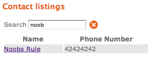

Noobs Rule
I’m recording for posterity an event that brings me great satisfaction: a rallying cry for newbies hiding right in the Databinder phone directory example :

(No I didn’t plant that there myself, thought I might have if I’d thought of it)
Helping new users get started with Wicket was is what I made Databinder to do. And to “get started,” in my opinion, you need to connect to a database. Everything else is a useless variation of helloworld.
I care about new Wicket users not just because I was once one myself, but also because they’re vital to the success of the framework. Superior technology doesn’t succeed on its merits alone—it has to win people over. Just ask Betamax, the Amiga, or New Coke. (And that’s just from the ’80s!)
Wicket was introduced after both JSF and Tapestry. It’s not the only second generation Web framework in Java town—just the best one. If it’s going to succeed, or even be around it ten years, it needs to pile on users now.
Mr. (or Ms.!) Noobs Rule, I salute you. And if 42424242 could possibly be a real phone number I’d call it to say, “I agree.”
Add a comment